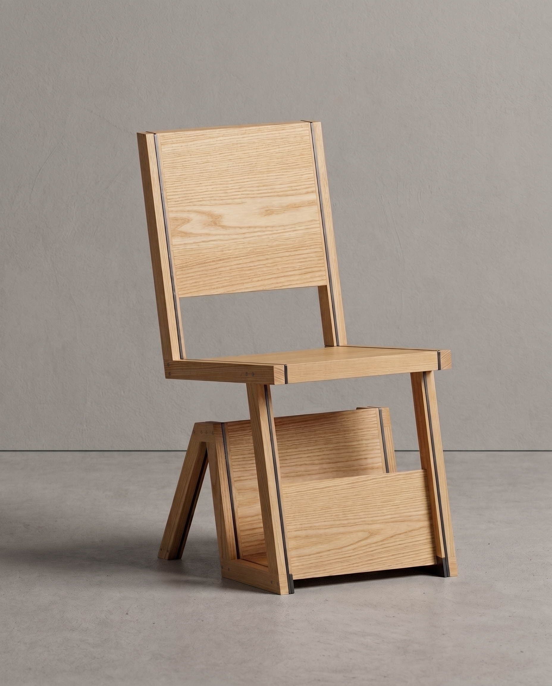
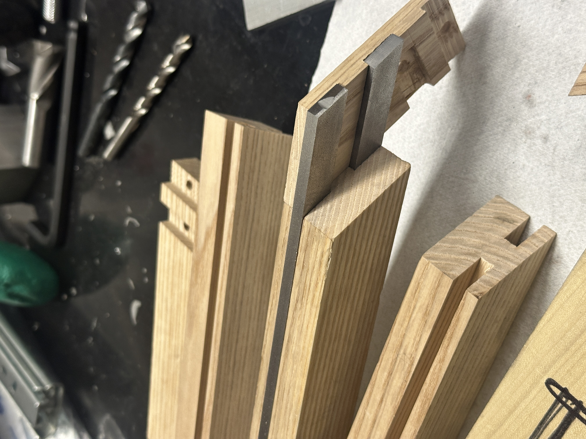
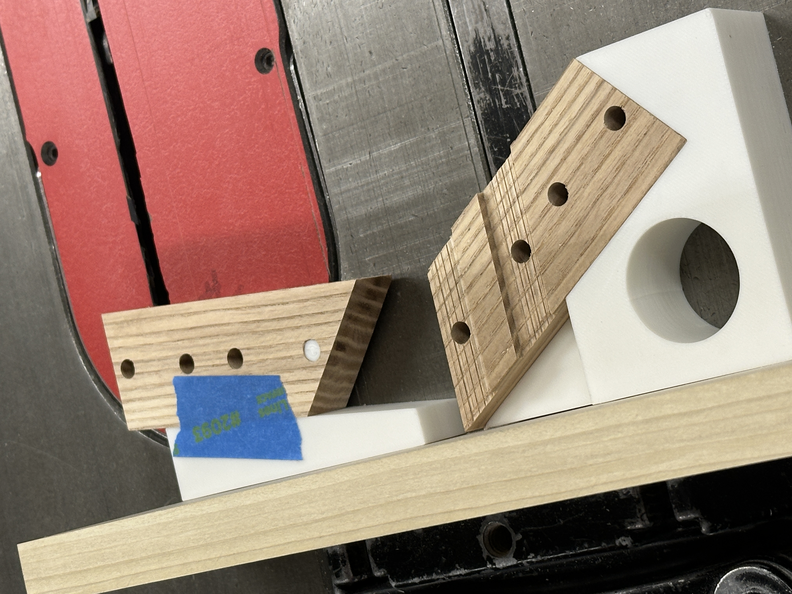
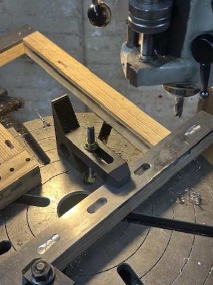
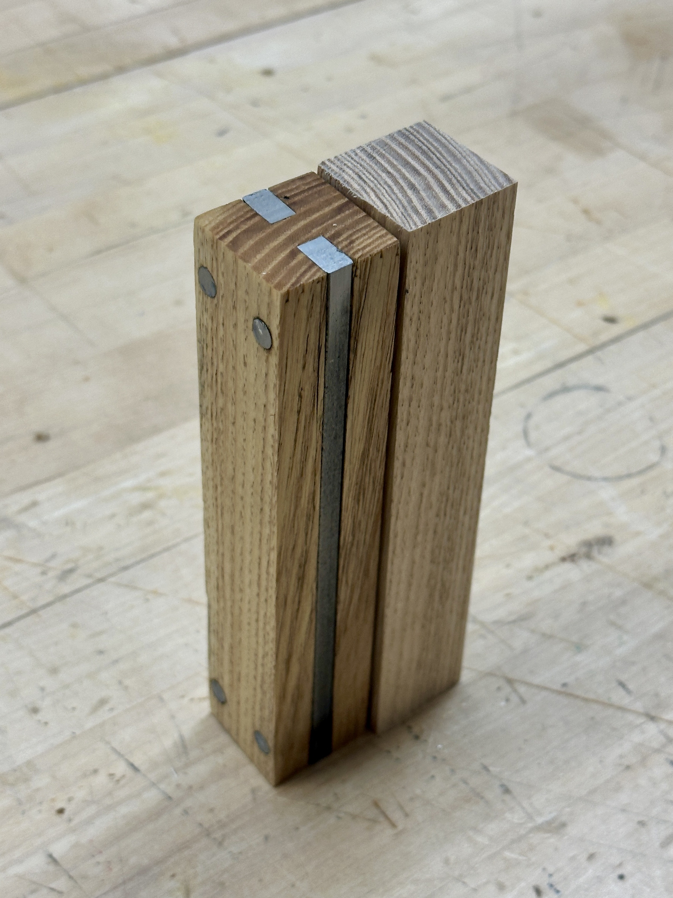
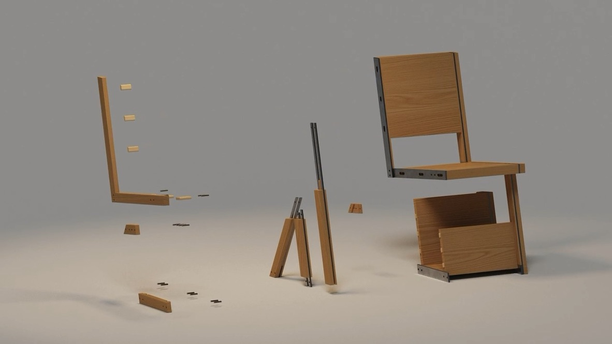
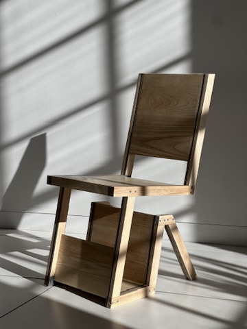

Boghylde
Braceless Cantilever Chair
Boghylde (Danish for "Bookshelf") is a braceless cantilevered reading chair developed as an engineering challenge where the structure serves as the aesthetic. The cantilevered posture is tuned for focus, offering enough ease to read while staying composed and attentive.
Category Furniture
Date 2025
Duration 4 Weeks
Skills Machining, Woodworking, Structural Analysis, Rhino
Objective
Designing a braceless cantilever chair that balances sculptural aesthetics with rigorous structural integrity.








Woodworking Process
Process Innovation Precision 3D-Printed Jigs To speed up repeatable cuts and holes, I designed jigs printed in PLA with 20% gyroid infill—giving even, isotropic support that cuts like softwood without tearing out big chunks. PLA was chosen over harder plastics or metals because its lower cutting resistance makes slip-cuts less dangerous, it’s inexpensive and quick to remake if damaged, and its lightweight nature simplifies handling for angled cuts and groove slots. Additionally, the Bambu Lab P1S printer delivers PLA prints with an average dimensional error of ±0.1 mm—far more precise than conventional woodworking tolerances, which often exceed 0.5 mm.


Metal Working Process
To echo the tactile beauty of traditional dowel joints in wooden furniture, I avoided welds entirely and instead used press-fit steel dowels to assemble the layered frame. This method not only mirrored the construction logic of the wood components but also brought warmth and character to the metalwork. The subtle tool marks, toleranced fits, and micro-variations introduced a level of material honesty and visual softness—qualities that mass automation can’t replicate, and which give the chair its uniquely human feel.

Finite Element Analysis (FEA)
Static structural FEA (von Mises) with a 3000 N distributed seat load (≈675 lbf, ≈306 kg-equiv) mapped stress concentrations across the frame and joints.
Minimum safety factor: 1.99 (target 2.146, yield-based) at a localized hotspot, guiding reinforcement of the critical joint region.
Sculptural in Presence
Cantilever Chair that blends sculpture and function, light yet bold enough for a gallery.

Purposeful in Use
Underseat offers space for curated texts and readings tied to the exhibition.